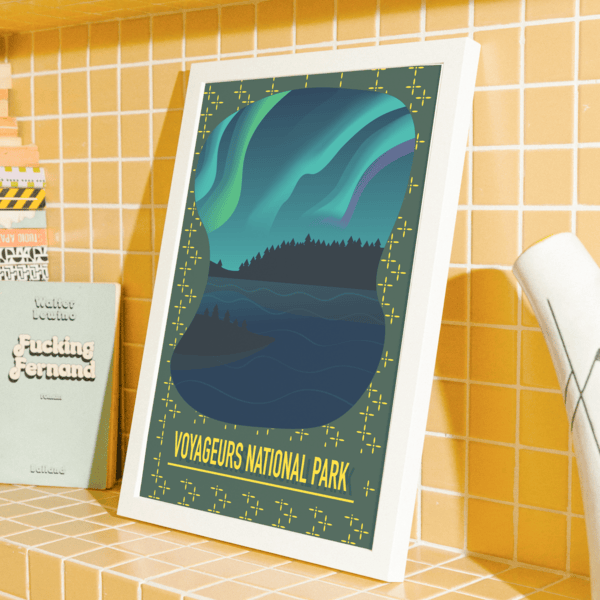
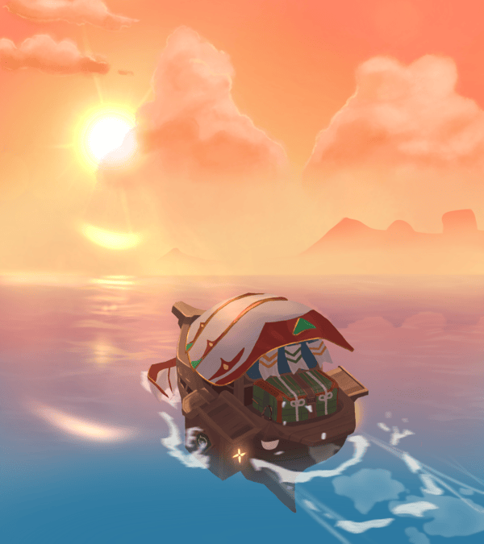

Welcome to my portfolio projects! Here, you'll find a curated collection of my creative work, showcasing my passion for web design, graphic design, and art. Each project reflects my dedication to innovation, functionality, and aesthetics.
A visually engaging website tailored for VTubers to showcase their online presence.
A poster project inspired by the beauty of Voyageurs National Park, crafted with graphic design techniques.
An illustration isnpired by the game Genshin Impact.